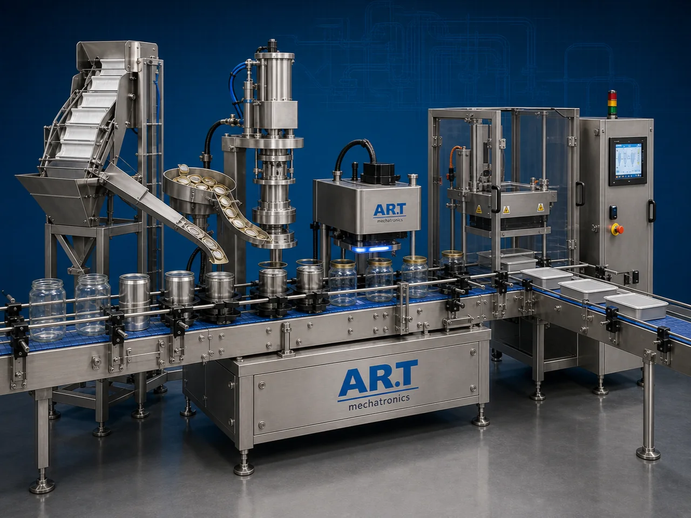

Can, Jar & Box Sealing Machine (Automatic Container Sealing System)
A Can, Jar & Box Sealing Machine, also known as a Container Sealing Machine, Jar Sealing Machine, Can Sealing Machine, or Automatic Container Closing System, is an advanced industrial packaging solution designed for automatic lid placement, capping, sealing, induction sealing, vacuum sealing, leak-proof sealing, coding, and high-speed retail packaging operations for cans, jars, boxes, bottles, tins, food containers, cosmetic containers, pharmaceutical containers, and FMCG products.

About the Can, Jar & Box Sealing Machine
Container sealing systems are widely used for:
- Tin can sealing
- Jar sealing operations
- Food container sealing
- Cosmetic container packaging
- Pharmaceutical container sealing
- Airtight retail packaging
- Moisture-protected packaging
- Leak-proof container packaging
The machine improves:
- Product protection
- Airtight sealing quality
- Shelf life protection
- Packaging consistency
- Product safety
- Production efficiency
- Retail packaging quality
Industrial can, jar & box sealing machines use:
- Automatic container feeding systems
- Servo synchronized sealing systems
- PLC and HMI automation controls
- Precision lid placement mechanisms
- Induction and vacuum sealing systems
to automatically seal containers with superior sealing integrity and high production efficiency.
Can, jar & box sealing machines are widely used in industries such as:
Food processing industries Beverage industries Pharmaceutical industries Cosmetic industries Tea industries Spice industries Tobacco industries FMCG industries
where hygienic packaging, leak-proof sealing, and long shelf life are essential.
The machine is highly suitable for:
- Food jar sealing
- Tin can sealing
- Cosmetic container sealing
- Pharmaceutical box sealing
- Spice jar packaging
- Premium retail packaging
ART Mechatronics offers high-performance can, jar & box sealing machines, engineered for continuous industrial operation, accurate sealing performance, hygienic packaging quality, and reliable long-term packaging automation.
Working Principle of Can, Jar & Box Sealing Machine
- 1. Filled Container Feeding Filled cans, jars, or boxes are automatically fed into sealing section through synchronized conveyor systems.
- 2. Lid Placement Process Machine automatically positions lids, caps, or covers onto containers before sealing operation.
Servo synchronization ensures accurate lid positioning and smooth container handling.
- 3. Container Sealing Operation Machine handles: ✔ Tin cans ✔ Glass jars ✔ PET jars ✔ Plastic containers ✔ Food boxes ✔ Cosmetic containers ✔ Pharmaceutical containers
accurately and continuously.
- 4. Airtight & Leak-Proof Sealing Process Machine performs: Induction sealing Vacuum sealing Heat sealing Can seaming Leak-proof sealing
for hygienic and moisture-protected packaging quality.
- 5. Coding & Inspection Integration Optional systems include: Batch coding Date printing QR code printing Vision inspection Leak testing systems
- 6. Finished Container Discharge Finished sealed containers discharged automatically for: Cartoning Case packing Retail distribution Export shipment handling
Types of Can, Jar & Box Sealing Machines
- 1. Induction Sealing Machine Designed for: ✔ Airtight food and beverage packaging applications
- 2. Vacuum Sealing Machine Suitable for: ✔ Moisture-sensitive and long shelf life packaging systems
- 3. Can Seaming Machine Uses: ✔ Tin can and metal container packaging systems
- 4. Jar Cap Sealing Machine Designed for: ✔ Glass and PET jar packaging systems
- 5. Servo Driven Sealing Machine Suitable for: ✔ Precision high-speed sealing operations
- 6. Fully Automatic Container Sealing System Designed for: ✔ Complete industrial packaging automation lines
Industries Using Sealing Machines
🍃 Food Processing Industry Processed foods, ingredients, snacks, and retail food container sealing systems. 🥤 Beverage Industry Juices, syrups, beverages, and liquid packaging sealing systems. 💊 Pharmaceutical Industry Medicine container and healthcare packaging sealing systems. 🧴 Cosmetic Industry Creams, lotions, gels, and cosmetic container sealing systems. 🌶️ Spice Industry Masala products, seasoning products, and spice jar sealing systems. 🚬 Tobacco Industry Shisha tobacco, oral nicotine products, and tobacco tin sealing systems.
Features & Advantages
- High-speed automatic container sealing operation
- Strong and airtight sealing quality
- Hygienic and leak-proof packaging systems
- PLC and servo automation control systems
- Improves product freshness and shelf life
- Reduces packaging wastage and labor dependency
- Supports multiple container sizes and formats
- Reliable long-term industrial performance
- Smooth and continuous packaging operation
Technical Highlights
Machine Type: Automatic container sealing machine Industrial can and jar sealer Packaging sealing system Packaging Material: Tin cans Glass jars PET jars Plastic containers Food-grade boxes Sealing Integration: Induction sealing systems Vacuum sealing systems Can seaming systems Heat sealing systems Features: PLC control system Servo synchronization Touchscreen HMI Batch coding integration Automatic lid placement Sealing Type: Airtight sealing Leak-proof sealing Vacuum sealing Hermetic sealing systems Automation: Semi-automatic Fully automatic industrial systems
Turnkey Sealing Solutions
ART Mechatronics offers: Complete container sealing systems Automatic packaging sealing solutions Packaging automation integration systems Conveyor synchronization systems Installation & commissioning After-sales service & AMC
Why Choose Art Mechatronics
Expertise in industrial packaging and automation systems Customized sealing solutions for multiple industries High-performance and durable sealing technology Advanced PLC and servo automation systems Proven industrial packaging performance across sectors
Applications
Food Processing Industries Beverage Manufacturing Plants Pharmaceutical Packaging Units Cosmetic Manufacturing Facilities Spice Packaging Industries Premium FMCG Packaging Plants
Get pricing & specs for the Can, Jar & Box Sealing Machine
Share the product, target capacity, current process and plant location. These details help our engineers discuss the right machine or line configuration.
One partner, from design to start-up
ART Mechatronics designs, manufactures, installs and commissions your Can, Jar & Box Sealing Machine solution with regional presence in India, UAE and Thailand.